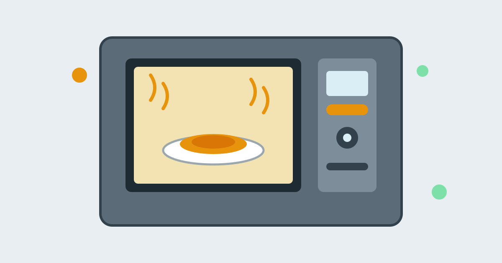

How a Microwave Oven Heats Your Food

Put a plate of cold leftovers in a microwave oven, press two minutes, and wait for the beep. The food comes out steaming hot, yet the plate is often cool enough to hold. There is no flame, no glowing element, and no smoke. It can feel like magic, but a microwave oven works on a clear principle, quite different from an ordinary oven.
In short, a microwave oven fills its cavity with invisible radio waves. Those waves make certain molecules in the food vibrate, and that vibration becomes heat. The oven does not heat the air around the food, and it barely heats the plate. It heats the food directly. Once that is clear, the cold spots, the cool plate, the lack of browning, and the sparks from a fork all fall into place.
What Microwaves Actually Are
Microwaves are electromagnetic radiation, in the same broad family as radio waves, visible light, and X-rays. A home microwave oven uses waves at about 2.45 gigahertz, oscillating about 2.45 billion times per second. They are produced by a magnetron, a vacuum tube that converts electricity into microwave energy, and carried into the oven cavity, where they bounce around until absorbed.
Microwaves are non-ionizing radiation. They cannot knock electrons off atoms or damage DNA the way X-rays can. Their energy moves molecules around, which is what heating is at the smallest scale, but they do not leave food radioactive, and they do not linger after the oven is switched off. When the magnetron stops, the heating stops.
How the Waves Turn Into Heat Inside Food
Food contains water, and often fat and sugar. Water molecules are polar: one end carries a slight positive charge, the other a slight negative charge. A microwave's rapidly changing electric field pulls these molecules first one way, then the other. They flip back and forth billions of times per second, bumping into neighbours. That motion is heat. In simple terms, the waves shake the water in the food, and the shaking warms it up.
Materials respond very differently to the same waves. Glass, ceramic, and most plastics let microwaves pass through with little absorption, so a glass dish stays relatively cool. Metal reflects them, which is why the oven walls are metal and the door has a fine metal mesh: the waves stay inside. Food, rich in water, absorbs them strongly. That contrast is the whole trick, and it explains the cool plate.
The waves reach only a few centimetres into food. The outer layer absorbs most of the energy, and the centre warms slowly as heat spreads inward. That is why a thick portion can be hot outside and cool in the middle, and why stirring and resting time matter.
Why Heating Is Often Uneven
The waves do not spread evenly. They reflect off the metal walls and interfere with each other, creating stronger and weaker spots, called standing waves. The turntable helps by moving food through different spots, so no part stays in a weak spot throughout. Even so, uneven heating is normal, which is why instructions tell you to stir halfway and let food stand after cooking.
Shape matters too. Thin, flat portions heat more evenly than thick ones, because more of the food is within reach of the waves. Covering food with a loose lid traps steam, which spreads heat and stops splashes. Standing time is not wasted: heat keeps moving from hotter to cooler parts, evening out the temperature without more energy from the oven.
Why the Plate Stays Cool, and Why It Sometimes Does Not
A plain ceramic or glass plate absorbs very little microwave energy, so it does not heat up directly. Most of the warmth you feel in a plate after cooking has travelled into it from the hot food sitting on it, by conduction. That is why the plate can feel cool at the edges, where it is not touching food, and warmer underneath the food itself.
Some plates do get hot, usually for a simple reason: a metallic rim, gold trim, or certain glazes can absorb energy. If a plate becomes very hot while the food is still lukewarm, use a different, plain microwave-safe dish next time.
Why Food Does Not Brown in a Microwave
Browning needs high, dry surface temperatures, well above boiling point. An ordinary oven surrounds food with hot, dry air, which dries the surface and lets it brown. In a microwave, the air stays relatively cool, food releases steam, and the surface rarely gets hot or dry enough. That is why bread stays soft and chicken skin stays pale, even when the inside is fully hot.
This is a trade-off, not a fault. A microwave oven is built for speed and convenience, not for roasting. For dishes where browning matters, cooks often finish the food briefly in a hot oven or under a grill, or use a microwave with a browning element. For reheating soup, rice, vegetables, and leftovers, the microwave's fast, direct heating is exactly what is wanted.
Why Metal Sparks, and What Else Can Go Wrong
Thin or sharp metal can cause a different problem. At a sharp edge, a crumpled corner of foil, or the tines of a fork, the electric field concentrates enough to create a spark, known as arcing. Arcing can scorch food and damage the oven. The safe everyday rule is simple: do not put metal, foil, or dishes with metallic decoration in a microwave oven.
Sealed containers and foods with a skin need care for a different reason. Steam builds up as food heats, and pressure rises if it cannot escape. Eggs in shells, sealed jars, and unpierced potatoes can burst, so pierce skins, loosen lids, and leave a vent. A mug of plain water can also superheat in a smooth mug and boil suddenly when disturbed, so let it stand briefly and stir carefully before lifting it.
Common Misconceptions About Microwave Ovens
One misconception is that microwaves cook from the inside out. They do not: the waves penetrate only a short distance, the outside heats first, and the inside warms by conduction, only faster. Another is that microwave cooking destroys nutrients. All cooking changes nutrients somewhat, depending on time, temperature, and water used. Because microwave cooking is usually short and uses little water, it is not generally worse than boiling, though no method preserves everything.
A third is that standing near a microwave is dangerous because waves escape. In an oven in good condition, the metal cavity and door mesh keep waves inside, and interlocks switch the magnetron off when the door opens. The mesh holes are much smaller than the microwaves' wavelength, so waves cannot pass, while light can, which is why you can watch the food. An oven with a damaged seal or a door that does not close properly should not be used until repaired.
Frequently Asked Questions
Why does food keep cooking after the beep?
Because heat keeps moving inside the food after the waves stop. The hotter outer parts continue to warm the cooler centre during standing time, so the temperature evens out and the centre finishes cooking. Resting the food for a few minutes is part of the cooking process, not an optional extra.
Can I use any plastic container in a microwave?
No. Only containers labelled microwave-safe should be used. Some plastics soften, warp, or release substances when heated, and thin takeaway containers are often not made for it. Glass and ceramic dishes labelled microwave-safe are the safest everyday choice.
Why does the handle of a mug stay cool while the drink is hot?
For the same reason the plate stays cool. The ceramic of the mug absorbs very little microwave energy, so it warms mainly where it touches the hot liquid. A handle that is not in contact with the liquid can stay cool even when the drink is steaming.
Does a microwave oven use a lot of electricity?
For reheating small portions, a microwave is usually efficient, because it heats food directly for only a few minutes. For a large pot of water or a big roast, a hob or oven may be better.
Conclusion
A microwave oven is not a small conventional oven. It is a radio-wave heater that shakes the water molecules in food until they are hot, while leaving the air, the plate, and the dish largely untouched. That single idea explains its speed, its uneven spots, its cool plates, and its limits.
Used with its quirks in mind, stirring, standing time, suitable dishes, and no metal, it is one of the most useful machines in a kitchen. The beep is not the end of cooking. Wait a moment, let the heat settle, and enjoy food heated by waves you cannot see.